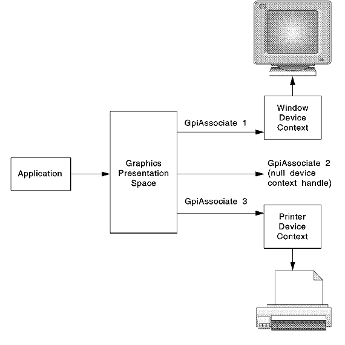
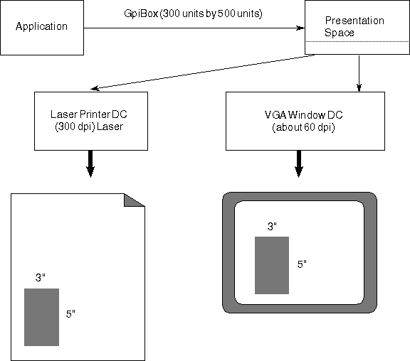

In order to print, a device context must be associated with a GPI presentation space (PS).
In most circumstances, a presentation space already exists for the screen. In such cases, the PS can be disassociated with the window device context and associated with the printer device context by using GpiAssociate, as shown in the following figure.
Reassociating Presentation Space with Device Contexts
If a presentation space does not exist or a different one is to be used, the application must call GpiCreatePS and use the GPI_ASSOC flag to associate the printer device context.
Device-Independence Considerations
The operating system supports true WYSIWYG. The same GPI functions the application used to create the picture or document on the display screen can be used to create the output on a printer. This is the major advantage of device independence.
An application must be designed around the options provided by the PM to ensure device independence, as a display (VGA) typically is 96 dpi, while a printer typically is 300 dpi.
Following are some application design considerations:

An Effect of Programming in Pels
Reassociating a presentation space defined in pels or other device dependent units can affect the dimension of the picture. If the pels are not square on the display device, the shape and scale (aspect ratio) will be different as well.